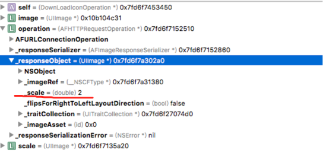

AFNetWoring 同步方法的使用：
NSURL* url = [[NSURL alloc] initWithString:[HOST stringByAppendingString:marker.icon.url]];
NSMutableURLRequest *request = [NSMutableURLRequest requestWithURL:url];
[request setValue:@"http://www.dituwuyou.com" forHTTPHeaderField:@"Referer"];
AFHTTPRequestOperation *operation = [[AFHTTPRequestOperation alloc] initWithRequest:request];
operation.responseSerializer = [AFImageResponseSerializer serializer];
/* 最终继承自 NSOperation，看到这个，大家可能就知道了怎么实现同步的了，也就是利用 NSOperation 来做的同步请求 */
[operation start];
//同步实现
[operation waitUntilFinished];
UIImage* image = (UIImage*)[operation responseObject];
if(image!=nil)
{
//做处理
}
return nil;
同步上传图片
AFHTTPRequestOperationManager *manager = [self getInitAFManager];
[manager.requestSerializer setValue:[self getUserToken] forHTTPHeaderField:TOKEN];
NSMutableURLRequest* request = [manager.requestSerializer multipartFormRequestWithMethod:@"POST" URLString:[HOST stringByAppendingString:@"/api/imgs/upload"] parameters:nil constructingBodyWithBlock:^(id<AFMultipartFormData> _Nonnull formData) {
[formData appendPartWithFileData:imgData name:@"Filedata" fileName:@"pic" mimeType:@"image/jpg"];
} error:nil];
AFHTTPRequestOperation *requestOperation = [[AFHTTPRequestOperation alloc] initWithRequest:request];
//返回结果json格式化
requestOperation.responseSerializer = manager.responseSerializer;
[requestOperation start];
[requestOperation waitUntilFinished];
/* 请求结果 */
NSDictionary *result = (NSDictionary *)[requestOperation responseObject];
block(YES,result);
AFNetWorking 传递数组参数
要求发送的格式
POST /api/maps/KAyzFxCAsYV9YfwII1KiTA/invite HTTP/1.1
Host: xxxxxxx
Token: DCA6smjmEU_Qcc8zT_E7
authenticity_token: m4XIJxCDw7mxNk/Eu7FbvS/H+jb09gi7cPBB5CUceVVC+fNdV0QAvXhtxrZDrl+uzqKmgBoUyghIU+FvkgkLVg==
Cache-Control: no-cache
Postman-Token: 71c7694b-0219-0579-1c0f-370e9eb9623a
Content-Type: application/x-www-form-urlencoded
phones[]=18610187749&phones[]=18518700870
AFHTTPRequestOperationManager *manager = [AFHTTPRequestOperationManager manager];
//manager 要使用默认的requestSerialize
//即要设置Content-Type: application/x-www-form-urlencoded
manager.responseSerializer = [AFJSONResponseSerializer new];
[manager.requestSerializer setValue:@"iOS" forHTTPHeaderField:@"Source"];
[manager.requestSerializer setValue:[self getUserToken] forHTTPHeaderField:TOKEN];
NSArray* array= @[phone];
NSDictionary *parameters = @{@"phones": array};
[manager.requestSerializer setValue:self.getUserToken forHTTPHeaderField:TOKEN];
NSString* url = [HOST stringByAppendingString:[NSString stringWithFormat:@"/api/maps/%@/invite",mid]];
[manager POST:url parameters:parameters success:success_block failure:fail_block];
AFNetWorking下载图片
使用AFNetworking下载图片得到的image默认被压缩，设置AFImageResponseSerializer的ImageScale属性可以决定是否压缩
NSURL *url = [[NSURL alloc] initWithString:[OSS_HOST stringByAppendingString:icon.url == nil ? @"" : icon.url]];
NSMutableURLRequest *request = [NSMutableURLRequest requestWithURL:url];
AFHTTPRequestOperation *operation = [[AFHTTPRequestOperation alloc] initWithRequest:request];
AFImageResponseSerializer *imageResponseSerializer = [AFImageResponseSerializer serializer];
//af 下载图片 会被压缩屏幕尺寸倍 设置有不会压缩
//[imageResponseSerializer setImageScale:1.0];
operation.responseSerializer = imageResponseSerializer;
[operation setCompletionBlockWithSuccess:^(AFHTTPRequestOperation *_Nonnull operation, id _Nonnull responseObject) {
UIImage *image = (UIImage *) [operation responseObject];
} failure:^(AFHTTPRequestOperation *_Nonnull operation, NSError *_Nonnull error) {
}];
[operation start];
如果不设置[imageResponseSerializer setImageScale:1.0]，responseSerializer的参数如下图：

Domain=NSURLErrorDomain Code=-1012 和 In order to validate a domain name for self signed certificates, you MUST use pinning错误
AFHTTPRequestOperationManager *manager = [AFHTTPRequestOperationManager manager];
manager.securityPolicy = [AFSecurityPolicy policyWithPinningMode:AFSSLPinningModeNone];
//解决“Error Domain=NSURLErrorDomain Code=-1012 "The operation couldn’t be completed.”的问题，AFNetworking 2.0默认在检查SSL证书的时候比较严格
manager.securityPolicy.allowInvalidCertificates = YES;
manager.securityPolicy.validatesDomainName = NO;
Error Domain=NSCocoaErrorDomain Code=3840 "The operation couldn’t be completed. (Cocoa error 3840.)" (JSON text did not start with array or object and option to allow fragments not set.) UserInfo=0x9152780 {NSDebugDescription=JSON text did not start with array or object and option to allow fragments not set.}
这个问题需要对AFHTTPRequestOperationManager添加requestSerializer和responseSerializer
manager.requestSerializer = [AFHTTPRequestSerializer serializer];
manager.responseSerializer = [AFHTTPResponseSerializer serializer];